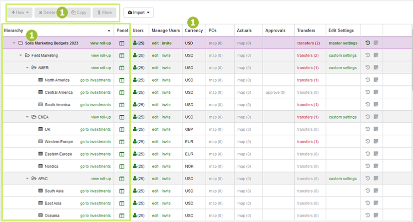

Budgets section
The  Budgets section is the access point for all budgets. It allows you to view collaborators and the currency of your investment plans. You can perform specific tasks around import, POs, actuals, and budget transfers. Administrators can view administrative functions such as configuring settings for the system.
Budgets section is the access point for all budgets. It allows you to view collaborators and the currency of your investment plans. You can perform specific tasks around import, POs, actuals, and budget transfers. Administrators can view administrative functions such as configuring settings for the system.

The budget hierarchy. For details, see About the budget hierarchy structure.
The list of users with access to budgets and investments. For details, see User access to budgets and investments.
Data import and budget management functions. For details, see Imports and budget transfers.
Configuration and other administrative functions. For details, see Administrator functions.
About the budget hierarchy structure
Your organization's budget hierarchy structure was developed during the implementation phase, with the objectives of reflecting your organization's internal processes and aligning with its strategic priorities.

The structure of the hierarchy is represented by folders and sub-folders. Investment plans are created on the lowest level. In the investment plans, you enter line items, for example, which expenses you're planning for a given investment, and compare this with the actual expenses.
For each folder and sub-folder you can display a roll-up. To do so, click view roll-up in the respective row. Roll-ups show the bottom-up aggregated data of the child investment plans and sub-folders. Click go to investments to open the corresponding plan. For more information see Plan.
For each element of the hierarchy, you can also open a panel that displays the essential data for the element. The data was set during implementation. To open the panel, click Open Roll-Up Panel in the Panel column.
You can also see in which currency the data for the folder, sub-folder or investment plan is managed. This is displayed in the Currency column. You can plan and forecast in a local currency, and this will roll up to a top-level investment plan currency.
Structuring options
Strategic decisions are made during the implementation process to structure the hierarchy in the  Budgets section, as it is foundational to the successful use and deployment of Uptempo Financial Management. Many factors are taken into consideration during this process, including Region, Functional Team, Product Line or Company Division, and Financial Systems.
Budgets section, as it is foundational to the successful use and deployment of Uptempo Financial Management. Many factors are taken into consideration during this process, including Region, Functional Team, Product Line or Company Division, and Financial Systems.
Region: Many organizations structure investment plans by region since field marketers are running marketing programs within a specific geography. This method ensures currency issues are kept to a minimum.
Functions: Some companies structure budget plans according to a functional area of spend, for example demand generation, public relations or events.
Product Line or Company Division: This structure divides spend according to a product, business unit or even brand. It is a common format for B2C marketing organizations and may be used in combination with a regional structure.
Financial Systems: Since marketing budgets need to be reconciled with financial systems, many marketing teams classify their budget this way. However, this is not ideal as accounting codes tend to be broader than marketers prefer to think about their investments.
Depending on your marketing organization structure, you may see any combination of hierarchy organization for a given year; as the hierarchy is designed to mirror your marketing organization.
Who can edit the hierarchy structure?
Only the system administrator can edit the budget hierarchy using the New, Delete, Copy and Move buttons above the hierarchy. For all other users in the system, these buttons are deactivated.
If you need to make changes to the hierarchy, contact your Uptempo administrator.
User access to budgets and investments
You can use the Users column to see which users have access to a folder or investment plan in the hierarchy:

When you click Click to view users in a folder, sub-folder or investment plan row, the Shared with dialog opens:

The dialog lists all users who have access to the folder, sub-folder or investment plan with the following details:
Name (Title)
E-Mail Address
Role
Your own details are always listed first. All other users are listed below in alphabetical order (by first name). Users who have been invited but have not registered in the system are listed at the end.
Access to the folder, sub-folder and investment plans is organized by invitations. The tasks a user can perform are determined by the assigned role. For more information, see Manage user access to budgets.
Imports and budget transfers
As a marketer, you also use the  Budgets section to perform various marketing operations duties:
Budgets section to perform various marketing operations duties:

Importing data and mapping it to line items
You can click the Import button to import data from external systems into Uptempo Financial Management. This includes data of an investment plan itself, as well as actuals and purchase orders (POs).
When Uptempo is unable to identify certain items from an imported POs or actuals file, these items will automatically be placed in a high-level bucket in the  Budgets section. All unmapped items are located in the POs and Actuals columns in the
Budgets section. All unmapped items are located in the POs and Actuals columns in the  Budgets section. You can map these items by clicking map under the POs and Actuals columns.
Budgets section. You can map these items by clicking map under the POs and Actuals columns.
You can click Import History and Schedules in the rightmost column of the table to view a list of all POs and Actuals files that have been imported into Uptempo Financial Management. This list contains details of which items were mapped, unmapped, replaced or considered duplicates, as well as the option to review scheduled imports.
For more information, see:
Reviewing budget transfers and budgets requests
Click transfers the Transfers column on the row of a folder, sub-folder or investment plan, to open an overview of all requests for budget transfers and budget increases of the corresponding item. In the case of a budget transfer, an amount of money is transferred from one investment plan or sub-folder to another corresponding item. A budget increase requests more money for a sub-folder or investment plan.
For more information on transfers, see Approval workflow for plans and forecasts.
Administrator functions
The functions in the Manage Users and Edit Settings columns of the  Budgets section table are for administrators:
Budgets section table are for administrators:

In the Manage Users column, you can set which users have access to the different levels of the hierarchy. You can also invite new users to the hierarchy.
In the Edit Settings column, you can configure various settings for Uptempo Financial Management, such as which data fields are displayed in the various panels.
For more information, please see Financial Management configuration overview.